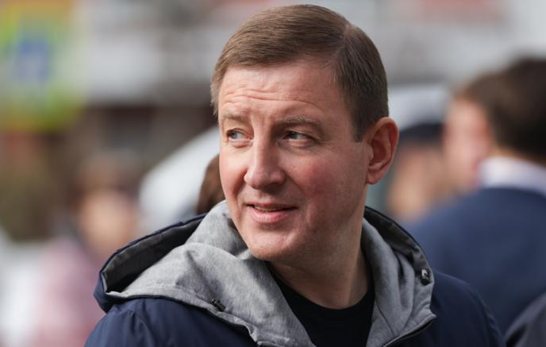

United Russia General. The party as war.

Turchak transformed United Russia from a bureaucratic structure into an active tool of military mobilization. Personally visits the front, organizes humanitarian convoys, and builds the image of the "party of victory."
Born in Leningrad to a prominent business family. Graduated from St. Petersburg State Technical University. Successful manager in the 1990s. Family connections open political doors.
Elected to the St. Petersburg Legislative Assembly. Rises quickly through United Russia ranks. Known as a loyalist and executor.
Appointed by Medvedev. Seven years managing a subsidized region. Scandal: in 2010 journalist Oleg Kashin was brutally beaten — investigators pointed toward Turchak's circle. The case was never solved.
Takes over the United Russia party apparatus. Restructures the party around mobilization tasks: volunteering, front support, agitation. Regularly travels to Donbas for photo ops.
One of the most visible politicians promoting the war narrative domestically. Publicly endorses annexation of four regions. EU, USA and UK impose personal sanctions. Fact
Turchak works through institutional structures. Under him, United Russia becomes a mechanism for broadcasting the war narrative down to regional branches, municipalities, and workplaces. Personal visits to the front create an image of a leader rather than a bureaucrat — an important shift in political communication for an audience tired of desk politicians. Interp.
EU personal sanctions since 2022 — for actively supporting the war and illegal annexation of Ukrainian territories. Fact USA and UK imposed equivalent sanctions. Fact Travel to EU, USA and UK banned, assets frozen.
All claims based on open public sources. Facts marked Fact have primary sources. Marked Interp. are editorial assessments.